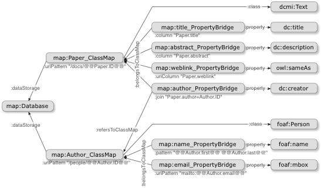

d2rq:Database)
d2rq:Configuration)
d2rq:ClassMap)
d2rq:PropertyBridge)
d2rq:PropertyBridgemailto: URIsd2rq:aliasd2rq:TranslationTable)
d2rq:DownloadMap)
The D2RQ Mapping Language is a declarative language for describing the relation between a relational database schema and RDFS vocabularies or OWL ontologies.
A D2RQ mapping is itself an RDF document written in Turtle syntax. The mapping is expressed using terms in the D2RQ namespace:
http://www.wiwiss.fu-berlin.de/suhl/bizer/D2RQ/0.1#
The terms in this namespace are formally defined in the D2RQ RDF schema (Turtle version, RDF/XML version).
The mapping defines a virtual RDF graph that contains information from the database. This is similar to the concept of views in SQL, except that the virtual data structure is an RDF graph instead of a virtual relational table. The virtual RDF graph can be accessed in various ways, depending on what's offered by the implementation. The D2RQ Platform provides SPARQL access, a Linked Data server, an RDF dump generator, a simple HTML interface, and Jena API access to D2RQ-mapped databases.
D2RQ mappings can be written by hand in a text editor, but usually it is much faster to start with the generate-mapping tool that generates a skeleton “default mapping” from the database schema.
The figure below shows the structure of an example D2RQ map:

The database is mapped to RDF terms, shown on the right, using
d2rq:ClassMaps and d2rq:PropertyBridges.
The most important objects within the mapping are the class maps.
A class map represents a class or a group of similar classes of the ontology.
A class map specifies how URIs (or blank nodes) are generated for
the instances of the class. It has a set of property bridges,
which specify how the properties of an instance are created.
ISWC example: We are using an example database which stores information about conferences, papers, authors and topics throughout this manual. The database is mapped to the International Semantic Web Community (ISWC) Ontology.
Wordpress example: Another example maps the Wordpress database schema to RDF.
Template: The following example D2RQ map relates the table conferences in a database to the class conference in an ontology. You can use the map as a template for writing your own maps.
# D2RQ Namespace
@prefix d2rq: <http://www.wiwiss.fu-berlin.de/suhl/bizer/D2RQ/0.1#> .
# Namespace of the ontology
@prefix : <http://annotation.semanticweb.org/iswc/iswc.daml#> .
# Namespace of the mapping file; does not appear in mapped data
@prefix map: <file:///Users/d2r/example.ttl#> .
# Other namespaces
@prefix rdfs: <http://www.w3.org/2000/01/rdf-schema#> .
@prefix xsd: <http://www.w3.org/2001/XMLSchema#> .
map:Database1 a d2rq:Database;
d2rq:jdbcDSN "jdbc:mysql://localhost/iswc";
d2rq:jdbcDriver "com.mysql.jdbc.Driver";
d2rq:username "user";
d2rq:password "password";
.
# -----------------------------------------------
# CREATE TABLE Conferences (ConfID int, Name text, Location text);
map:Conference a d2rq:ClassMap;
d2rq:dataStorage map:Database1;
d2rq:class :Conference;
d2rq:uriPattern "http://conferences.org/comp/confno@@Conferences.ConfID@@";
.
map:eventTitle a d2rq:PropertyBridge;
d2rq:belongsToClassMap map:Conference;
d2rq:property :eventTitle;
d2rq:column "Conferences.Name";
d2rq:datatype xsd:string;
.
map:location a d2rq:PropertyBridge;
d2rq:belongsToClassMap map:Conference;
d2rq:property :location;
d2rq:column "Conferences.Location";
d2rq:datatype xsd:string;
.
The individual constructs of the D2RQ mapping language are described in detail below.
d2rq:Database)A d2rq:Database defines a JDBC connection to a local or
remote relational database.
A D2RQ map can
contain several d2rq:Databases for accessing different databases.
d2rq:Database| d2rq:jdbcDSN | The JDBC database URL. This is a string of the form
jdbc:subprotocol:subname. For a MySQL database,
this is something like jdbc:mysql://hostname:port/dbname.
Examples for other databases |
|---|---|
| d2rq:jdbcDriver | The JDBC driver class name for the database. Used together with d2rq:jdbcDSN.
Example: com.mysql.jdbc.Driver for MySQL. |
| d2rq:username | A username if required by the database. |
| d2rq:password | A password if required by the database. |
| d2rq:resultSizeLimit | An integer value that will be added as a LIMIT clause to all
generated SQL queries. This sets an upper bound for the number
of results returned from large databases. Note that this effectively
“cripples” the server and can cause unpredictable
results. Also see d2rq:limit
and d2rq:limitInverse,
which may be used to impose
result limits on individual property bridges. |
| d2rq:fetchSize | An integer value that specifies the number of rows to retrieve
with every database request. This value is particularily important to control memory resources
of both the D2RQ and the database server when performing dumps.
dump-rdf sets this value to 500 by default, or to Integer.MIN_VALUE for MySQL in order to
enable streaming mode. |
| d2rq:startupSQLScript | URL of a SQL script to be executed on startup. Useful for initializing the connection and testing. To load from the file system relative to the mapping file's location, use this syntax: d2rq:startupSQLScript <file:script.sql>; |
| d2rq:textColumn d2rq:numericColumn d2rq:dateColumn d2rq:timestampColumn d2rq:timeColumn d2rq:binaryColumn d2rq:booleanColumn d2rq:bitColumn d2rq:intervalColumn |
These properties are used to declare the column type of database
columns. This affects the kind of SQL literal that D2RQ will use to
query for values in this column.
The objects of the properties are column names in
Table_name.column_name notation.
These properties do not need to be specified unless
the engine is for some reason unable to determine the correct
column type by itself. The d2rq:timestampColumn
is for column types that combine a date and a time. The
d2rq:binaryColumn is for column types that contain
binary data, such as BLOBs.
|
map:Database1 a d2rq:Database;
d2rq:jdbcDSN "jdbc:mysql://localhost/iswc";
d2rq:jdbcDriver "com.mysql.jdbc.Driver";
d2rq:username "user";
d2rq:password "password";
.
Most JDBC drivers offer a range of JDBC connection properties,
which specify advanced configuration options for the JDBC database connection.
A D2RQ mapping file can be made to use arbitrary connection properties when
setting up the JDBC connection. This is done through the jdbc: namespace
(namespace URI: http://d2rq.org/terms/jdbc/). RDF properties in that
namespace will be passed as connection properties.
Consult your JDBC driver's documentation for a list of available properties.
@prefix jdbc: <http://d2rq.org/terms/jdbc/> .
map:database a d2rq:Database;
# ... other database configuration ...
jdbc:autoReconnect "true";
jdbc:zeroDateTimeBehavior "convertToNull";
.
The example uses two connection properties which are understood by the MySQL
JDBC driver: autoReconnect=true and
zeroDateTimeBehavior=convertToNull.
Some database servers like MySQL may terminate open client connections after some
interval (MySQL default is 8 hours). To keep alive long-term connections, D2R can be
configured to periodically run "noop" queries. This feature can be enabled with the
special property jdbc:keepAlive. An example is given below:
@prefix jdbc: <http://d2rq.org/terms/jdbc/> .
map:database a d2rq:Database;
# ... other database configuration ...
jdbc:keepAlive "3600"; # value in seconds
jdbc:keepAliveQuery "SELECT 1"; # (optionally to override default noop query)
.
By default the noop query is “SELECT 1”, which may not work with some DBMS.
For this purpose, the default query may be overridden with a custom noop query.
d2rq:Configuration)A d2rq:Configuration controls global behaviour of D2RQ. It is generally not required if the defaults are satisfactory.
d2rq:Configuration| d2rq:serveVocabulary | Whether to serve inferred and user-supplied vocabulary data (boolean; true by default). This option is automatically set when using D2R Server's --fast command-line option. |
|---|---|
| d2rq:useAllOptimizations | Whether to use bleeding edge optimizations (boolean; false by default). |
In order to activate bleeding edge optimizations, a d2rq:Configuration block with the property d2rq:useAllOptimizations set to true is created:
map:Configuration a d2rq:Configuration;
d2rq:useAllOptimizations true.
d2rq:ClassMap)A d2rq:ClassMap represents a class or a group of similar classes
of an OWL ontology or RDFS schema. A class map defines how instances of the
class are identified. It is connected to a d2rq:Database and has
a set of d2rq:PropertyBridges which attach properties to the instances.
D2RQ provides four different mechanisms of assigning identifiers to the instances in the database:
A URI pattern is instantiated by inserting values of certain database columns into a pattern. Examples:
http://example.org/persons/@@Persons.ID@@ http://example.org/lineItems/item@@Orders.orderID@@-@@LineItems.itemID@@ urn:isbn:@@Books.isbn@@ mailto:@@Persons.email@@
The parts between @@'s mark database columns in
Table.Column notation. URI patterns are used
with the d2rq:uriPattern property.
Certain characters, like spaces or the hash sign, are not allowed in URIs or have special meaning. Columns that contain such characters need to be encoded before their values can be inserted into a URI pattern:
@@Table.Column|urlencode@@,
then URL encoding
is applied before the string is inserted.@@Table.Column|urlify@@,
then URL encoding is applied, with an additional rule that spaces are
converted to underscores (_). Some people find that this
produces friendlier URIs.@@Table.Column|encode@@,
then percent encoding
(as defined in W3C's Direct Mapping) is applied before the string
is inserted.Warning: If the URIs produced by
a URI pattern with encoding are also produced elsewhere
in the D2RQ mapping without the use of the same encoding
(e.g., from a
d2rq:uriColumn or
d2rq:constantValue),
then SPARQL queries that “join” over those URIs may not work
as expected.
A relative URI pattern is a URI pattern that generates relative URIs:
persons/@@Persons.ID@@
They will be combined with a base URI provided by
the processing environment to form full URIs. Relative
URI patterns allow the creation of portable mappings that
can be used for multiple instances of the same database
schema. Relative URI patterns are generated
with the d2rq:uriPattern property.
In some cases, the database may already contain URIs that
can be used as resource identifiers, such as web page and
document URLs. URI are generated from columns
with the d2rq:uriColumn property.
URIs can be generated with a SQL expression, specified
via d2rq:uriSqlExpression. The expression
must yield a valid URI.
RDF also has the concept of blank nodes, existential qualifiers
that denote some resource that exists and has certain properties,
but is not named. In D2RQ, blank nodes can be generated from one or
more columns. A distinct blank node will be generated for each distinct
set of values of these columns. The columns are specified using the
with the d2rq:bNodeIdColumns property.
Note that blank nodes cannot be referenced from outside the RDF graph they exist in. This limits their usefulness, and they are best avoided.
A d2rq:ClassMap usually produces many resources. Sometimes
it is desirable to have a class map that only produces a single resource
with fixed, static identity. In that case, one can use the
d2rq:constantValue property to provide the URI for the
single instance.
d2rq:ClassMap| d2rq:dataStorage | Reference to a d2rq:Database where the instance data is stored. |
|---|---|
| d2rq:class | An RDF-S or OWL class. All resources generated by this ClassMap are instances of this class. |
| d2rq:uriPattern | Specifies a URI pattern that will be used to identify instances of this class map. |
| d2rq:uriColumn | A database column containing URIrefs for identifying
instances of this class map. The column name has to be in the form
"TableName.ColumnName". |
| d2rq:uriSqlExpression | A SQL expression that generates the URI identifiers
for instances of this class map. Similar to d2rq:sqlExpression.
The output must be a valid URI. Note that querying
for such a computed value might put a heavy load on the database.
See example below. |
| d2rq:bNodeIdColumns | A comma-seperated list of column names in
"TableName.ColumnName" notation. The instances of
this class map will be blank nodes, one distinct blank node
per distinct tuple of these columns. |
| d2rq:constantValue | This class map will only have a single instance, which is named by the value of this property. This can be a blank node or a URI. |
| d2rq:containsDuplicates | Must be specified if a class map uses information from tables
that are not fully normalized. If the d2rq:containsDuplicates property value
is set to "true", then D2RQ adds a DISTINCT clause to all queries using
this classMap. "False" is the default value, which doesn't have
to be explicitly declared. Adding this property to class maps based on normalized
database tables degrades query performance, but doesn't affect query results. |
| d2rq:additionalProperty | Adds an AdditionalProperty
to all instances of this class.
This might be useful for adding rdfs:seeAlso properties or other fixed
statements to all instances of the class. |
| d2rq:condition | Specifies an SQL WHERE condition. An instance of this class
will only be generated for database rows that satisfy the condition. Conditions
can be used to hide parts of the database from D2RQ, e.g. deny access to
data which is older or newer than a certain date. See section Conditional
Mappings for details. |
| d2rq:classDefinitionLabel | Specifies a label that will be served as rdfs:label
for all associated class definitions. Multiple lables, e.g. in several languages, are supported. |
| d2rq:classDefinitionComment | Specifies a comment that will be served as rdfs:comment
for all associated class definitions. Multiple comments are supported. |
| d2rq:additionalClassDefinitionProperty | Adds an AdditionalProperty to all associated class definitions. |
Furthermore,
d2rq:valueMaxLength,
d2rq:valueRegex,
d2rq:valueContains,
and d2rq:translateWith
can be used and work the same way as on property bridges.
d2rq:join and
d2rq:alias can be used too,
and are inherited by the map's property bridges.
map:PaperClassMap a d2rq:ClassMap;
d2rq:uriPattern "http://www.conference.org/conf02004/paper#Paper@@Papers.PaperID@@";
d2rq:class :Paper;
d2rq:classDefinitionLabel "paper"@en;
d2rq:classDefinitionComment "A conference paper."@en;
d2rq:dataStorage map:Database1;
.
The d2rq:class property is used to state that all resources generated by the
d2rq:ClassMap are instances of an RDFS or OWL class. D2RQ automatically creates
the necessary rdf:type triples.
map:Topic a d2rq:ClassMap;
d2rq:bNodeIdColumns "Topics.TopicID";
d2rq:class :Topic;
d2rq:classDefinitionLabel "topic"@en;
d2rq:classDefinitionComment "A topic."@en;
d2rq:dataStorage map:Database1;
.
If you want to use one ClassMap for a group of classes with the same properties
(like Person, Professor, Researcher, Student) that all come from the same table,
you must create the rdf:type statements with an object property bridge instead of
using d2rq:class.
map:PersonsClassMap a d2rq:ClassMap;
d2rq:uriColumn "Persons.URI";
d2rq:dataStorage map:Database1;
.
map:PersonsType a d2rq:PropertyBridge;
d2rq:property rdf:type;
d2rq:pattern "http://annotation.semanticweb.org/iswc/iswc.daml#@@Persons.Type@@";
d2rq:belongsToClassMap map:PersonsClassMap
.
Here, the class of each person is obtained by prefixing the values of the Persons.Type column with an ontology namespace. If the class names within the ontology can't be constructed directly from values of the Persons.Type column, then a TranslationTable could be used for aligning class names and database values.
d2rq:PropertyBridge)A d2rq:PropertyBridge relates a database column to
an RDF property. Property bridges are
used to attach properties to the RDF resources created by a class map.
The values of these properties are often literals, but can also be URIs
or blank nodes that relate the resource to other resources, e.g. the value
of a paper's :author property could be a URI representing a person.
If the one of the columns used in a property bridge is NULL
for some database rows, then no property is created for the resources
corresponding to these rows.
d2rq:PropertyBridge| d2rq:belongsToClassMap | Specifies that the property bridge belongs to a d2rq:ClassMap.
Must be specified for every property bridge. |
|---|---|
| d2rq:property | The RDF property that connects the ClassMap
with the object or literal created by the bridge. Must be specified for
every property bridge. If multiple d2rq:properties are
specified, then one triple with each property is generated per resource. |
| d2rq:dynamicProperty | A URI pattern that is used to generate the property URI at runtime. If multiple d2rq:dynamicProperty are specified, then one triple with each property is generated per resource. |
| d2rq:column | For properties with literal values.
The database column that contains the literal values.
Column names have to be given in the form "TableName.ColumnName".
|
| d2rq:pattern | For properties with literal values. Can be used to extend and combine column values before they are used as a literal property value. If a pattern contains more than one column, then a separating string, which cannot occur in the column values, has to be used between the column names, in order to allow D2RQ reversing given literals into column values. |
| d2rq:sqlExpression | For properties with literal values. Generates literal values by evaluating a SQL expression. Note that querying for such a computed value might put a heavy load on the database. See example below. |
| d2rq:datatype | For properties with literal values. Specifies the RDF datatype of the literals. |
| d2rq:lang | For properties with literal values. Specifies the language tag of the literals. |
| d2rq:constantValue | For properties that have the same constant value on all instances of the class map. The value can be a literal, blank node, or URI. See example below. |
| d2rq:refersToClassMap | For properties that correspond to a foreign key.
References another
d2rq:ClassMap that creates the instances which are used
as the values of this bridge. If these instances
come from another table, then one or more
d2rq:join properties
must be specified to select the correct instances. See
example below. |
| d2rq:uriColumn d2rq:uriPattern d2rq:uriSqlExpression |
For properties where the value is supposed to be a URI instead of a literal. They work the same as on class maps. |
| d2rq:join | If the columns used to create the literal value or object
are not from the database table(s) that contains the ClassMap's columns,
then the tables have to be joined together using one or more d2rq:join
properties.
See examples below. |
| d2rq:alias | Aliases take the form "Table AS Alias"
and are used when a table needs to be joined to itself.
The table can be referred to using the alias within the
property bridge. See example below. |
| d2rq:condition | Specifies an SQL WHERE condition. The bridge will only generate
a statement if the condition holds. A common usage is to suppress triples
with empty literal values: d2rq:condition "Table.Column <> ''".
See section Conditional Mappings for details.
|
| d2rq:translateWith | Assigns a d2rq:TranslationTable to the property bridge. Values
from the d2rq:column or d2rq:pattern will be translated by the table. See
section TranslationTables for details. |
| d2rq:valueMaxLength | Asserts that all values of this bridge are not longer than a number of characters. This allows D2RQ to speed up queries. See section Performance Optimization for details. |
| d2rq:valueContains | Asserts that all values of this bridge always contain a given
string. This allows D2RQ to speed up queries. Most useful in conjunction
with d2rq:column. See section Performance Optimization
for details. |
| d2rq:valueRegex | Asserts that all values of this bridge match a given regular
expression. This allows D2RQ to speed up queries. Most useful in conjunction
with d2rq:column on columns whose values are very different from other columns
in the database. See section Performance Optimization
for details. |
| d2rq:propertyDefinitionLabel | Specifies a label that will be served as rdfs:label
for all associated property definitions. Multiple lables, e.g. in several languages, are supported. |
| d2rq:propertyDefinitionComment | Specifies a comment that will be served as rdfs:comment
for all associated property definitions. Multiple comments are supported. |
| d2rq:additionalPropertyDefinitionProperty | Adds an AdditionalProperty to all associated property definitions. |
| d2rq:limit | The maximum number of results to retrieve from the database for this PropertyBridge. Also see d2rq:resultSizeLimit. |
| d2rq:limitInverse | The maximum number of results to retrieve from the database for the inverse statements for this PropertyBridge. |
| d2rq:orderAsc | The column after which to sort results in ascending order for this PropertyBridge. Useful when results are limited using d2rq:limit. |
| d2rq:orderDesc | The column after which to sort results in descending order for this PropertyBridge. Useful when results are limited using d2rq:limit. |
map:PaperTitle a d2rq:PropertyBridge;
d2rq:belongsToClassMap map:Paper;
d2rq:property :title;
d2rq:column "Papers.Title";
d2rq:lang "en";
d2rq:propertyDefinitionLabel "title"@en;
d2rq:propertyDefinitionComment "A paper's title."@en;
.
This attaches a :title property to all resources generated
by the map:Paper class map. The property values are
taken from the Papers.Title column. The generated literals
will have a language tag of "en".
map:authorName a d2rq:PropertyBridge;
d2rq:belongsToClassMap map:Papers;
d2rq:property :authorName;
d2rq:column "Persons.Name";
d2rq:join "Papers.PaperID <= Rel_Person_Paper.PaperID";
d2rq:join "Rel_Person_Paper.PersonID => Persons.PerID";
d2rq:datatype xsd:string;
d2rq:propertyDefinitionLabel "name"@en;
d2rq:propertyDefinitionComment "Name of an author."@en;
.
This property bridge adds the names of authors to papers.
If a paper has several authors, then several :authorName
properties are added. The tables Papers
and Persons are in an n:m relation. The d2rq:join
is used to join the tables over the Rel_Person_Paper. The join condition contains
directed arrows that indicate the foreign key relationship and are used as an optimization hint.
In the example above, the arrow directions indicate that all possible values of Rel_Person_Paper.PaperID and
Rel_Person_Paper.PersonID are present in Papers.PaperID and Persons.PerID, respectively.
Where this is unclear, a simple equation sign (=) may be used.
mailto: URIs
map:PersonsClassEmail a d2rq:PropertyBridge;
d2rq:belongsToClassMap map:PersonsClassMap;
d2rq:property :email;
d2rq:uriPattern "mailto:@@Persons.Email@@";
.
The pattern mailto:@@Persons.Email@@ is used to
attach a mailto: prefix to the values of the
"Persons.Email" column. The example uses
d2rq:uriPattern instead of d2rq:pattern
because the bridge should produce URIs, not literals.
The popular FOAF vocabulary has a
property foaf:mbox_sha1sum for publishing email addresses in an
encoded form. This prevents spammers from harvesting the address, while still
letting us recognize if the same email address is used in two different
places.
map:UserEmailSHA1 a d2rq:PropertyBridge;
d2rq:belongsToClassMap map:User;
d2rq:property foaf:mbox_sha1sum;
d2rq:sqlExpression "SHA1(CONCAT('mailto:', user.email))";
.
The values of the foaf:mbox_sha1sum are computed by evaluating
the d2rq:sqlExpression. We first create a mailto: URI
from the email address, as required by FOAF. Then we apply the SHA1
hash function, again as required by FOAF. The result will be a literal value.
Note that querying for a specific foaf:mbox_sha1sum value will
put a heavy load on the database because the hash has to be computed for every
user in the database. For a large database, it would be better to store the
encoded values in a column in the database.
map:HomepageURL a d2rq:PropertyBridge;
d2rq:belongsToClassMap map:PersonsClassMap;
d2rq:property foaf:homepage;
d2rq:uriSqlExpression "CONCAT('http://www.company.com/homepages/', user.username)";
.
The pattern mailto:@@Persons.Email@@ is used to
attach a mailto: prefix to the values of the
"Persons.Email" column. The example uses
d2rq:uriPattern instead of d2rq:pattern
because the bridge should produce URIs, not literals.
map:PaperConference a d2rq:PropertyBridge;
d2rq:belongsToClassMap map:Paper;
d2rq:property :conference;
d2rq:refersToClassMap map:Conference;
d2rq:join "Papers.Conference => Conferences.ConfID";
.
The example attaches a :conference property to papers.
The values of the property are generated by the map:Conference
class map, not shown here. It may use a d2rq:uriPattern,
d2rq:uriColumn or blank nodes to identify the conferences.
The appropriate instance is found using the d2rq:join
on the foreign key Papers.Conference.
Foreign keys can span multiple columns. To create a property that
links instances along such a foreign key, use multiple
d2rq:join properties on the property bridge, one for
each pair of columns in the key:
map:PaperConference a d2rq:PropertyBridge;
d2rq:belongsToClassMap map:Paper;
d2rq:property :journalIssue;
d2rq:refersToClassMap map:JournalIssue;
d2rq:join "Papers.Journal => Journal.JournalID";
d2rq:join "Papers.Issue => Journal.IssueID";
.
In the example, the Journal table has a composite
key consisting of JournalID and IssueID.
The foreign key constraint that assigns papers to journals covers
two columns, and hence two d2rq:joins are needed.
d2rq:alias
map:ParentTopic a d2rq:PropertyBridge;
d2rq:belongsToClassMap map:Topic;
d2rq:property :parentTopic;
d2rq:refersToClassMap map:Topic;
d2rq:join "Topics.ParentID => ParentTopics.ID";
d2rq:alias "Topics AS ParentTopics";
.
Here, a topic may have a parent topic whose ID is found in
the Topics.ParentID column. This foreign key refers
back to the Topics.ID column. The table has to be
joined to itself. A d2rq:alias is declared, and
the join is established between the original table and the
aliased table. This pattern is typical for hierarchical
or graph-style relationships.
Sometimes it is desirable to add a property with a constant value
to every resource that is created by a class map. To achieve this,
use a d2rq:PropertyBridge that uses d2rq:constantValue:
map:PersonsClassMap a d2rq:ClassMap;
d2rq:class :Person;
.
map:seeAlsoBridge a d2rq:PropertyBridge;
d2rq:belongsToClassMap map:PersonsClassMap;
d2rq:property rdfs:seeAlso;
d2rq:constantValue <http://annotation.semanticweb.org/iswc2003/>;
.
This adds an rdfs:seeAlso statement with a fixed URL object
to every instance of the map:PersonsClassMap class map.
d2rq:TranslationTable)A d2rq:TranslationTable is an additional layer between the
database and the RDF world. It translates back and forth between values taken
from the database and RDF URIs or literals. A translation table can be attached
to a class map or a property bridge using the d2rq:translateWith property. Translation tables
can be used only for mappings that are unique in both directions (1:1).
Warning:
If URIs produced using a translation table are also produced elsewhere
in the D2RQ mapping without the same translation table (e.g., from a
d2rq:uriColumn or
d2rq:constantValue),
then SPARQL queries that “join” over those URIs may not work
as expected.
d2rq:TranslationTable| d2rq:translation | Adds a d2rq:Translation
to the table. |
|---|---|
| d2rq:href | Links to a CSV file containing translations. Each line of the file is a translation and contains two strings separated by a comma. The first one is the DB value, the second the RDF value. |
| d2rq:javaClass | The qualified name of a Java class that performs the mapping. The class must implement the Translator interface. Custom Translators might be useful for encoding and decoding values, but are limited to 1:1 translations. Further datails can be found in the D2RQ javadocs. |
A d2rq:Translation is a single entry in a
d2rq:TranslationTable.
| d2rq:databaseValue | A value that might appear in a database column
or might be generated by a d2rq:pattern. |
|---|---|
| d2rq:rdfValue | A translation of that value to be used in RDF constructs. |
A typical application are database columns containing type codes or similar
enumerated values. A translation table can be used to turn them into RDF resources.
In this example, the column ShinyObject.Color contains a color code: "R" for
red, "G" for green etc. These codes must be translated into RDF resources: :red,
:green etc.
:red a :Color;
:green a :Color;
# ... more colors omitted ...
:blue a :Color;
map:ColorBridge a d2rq:PropertyBridge;
d2rq:belongsToClassMap map:ShinyObjectMap;
d2rq:property :color;
d2rq:uriColumn "ShinyObject.Color";
d2rq:translateWith map:ColorTable;
.
map:ColorTable a d2rq:TranslationTable;
d2rq:translation [ d2rq:databaseValue "R"; d2rq:rdfValue :red; ];
d2rq:translation [ d2rq:databaseValue "G"; d2rq:rdfValue :green; ];
# ... more translations omitted ...
d2rq:translation [ d2rq:databaseValue "B"; d2rq:rdfValue :blue; ];
.
The d2rq:translateWith statement tells D2RQ to look up database values in the
map:ColorTable. There, a translation must be given for each possible value.
If the database contains values which are not in the translation table, D2RQ
will not generate a :color statement for that :ShinyObject instance.
Note that the type of the resulting RDF node is determined by the bridge
and not by the node type of the rdfValues. map:ColorBridge uses d2rq:uriColumn.
Thus, the translation will create URI nodes. If it used d2rq:column,
then literals would be created.
d2rq:DownloadMap)Some databases contain entire files, such as PDFs or PNGs, in database
columns (often of types like BLOB). D2R Server can make the
contents of such columns downloadable using a
d2rq:DownloadMap.
A d2rq:DownloadMap specifies the name of the column that
contains the downloadable content, and a
URI pattern in the server's URI space
from where the content is to be made downloadable. An instance of
d2rq:DownloadMap can have the following properties:
d2rq:DownloadMap| d2rq:dataStorage | A d2rq:Database instance |
|---|---|
| d2rq:contentDownloadColumn | The column containing downloadable resources, in
[SCHEMA.]TABLE.COLUMN notation |
| d2rq:uriPattern d2rq:uriColumn d2rq:uriSqlExpression d2rq:constantValue |
Specifies the URIs where the server will make downloadable URIs
available. Details are the same as for
d2rq:ClassMap
and d2rq:PropertyBridge.
Only one may be used. |
| d2rq:mediaType | The Internet media type
of the files served from this download map. This will be sent in the HTTP
Content-Type header. Examples include application/pdf,
image/png, text/plain and text/html.
If absent, application/octet-stream will be sent to indicate
a generic binary file. The value can be obtained from the database using
the d2rq:pattern syntax (see
example). |
| d2rq:condition d2rq:join d2rq:alias |
Same meaning as on d2rq:ClassMap
and d2rq:PropertyBridge |
| d2rq:belongsToClassMap | Can be used instead of d2rq:dataStorage to point to an existing
d2rq:ClassMap instance. The class map's
data storage will be used, and any conditions, joins and aliases of the
class map will be inherited by the download map. This facilitates the use
of a single resource as both download map and
property bridge,
see example. |
In the following example, the PAPER.PDF column is
assumed to contain PDF files.
map:PaperDownload a d2rq:DownloadMap;
d2rq:dataStorage map:database;
d2rq:uriPattern "downloads/@@PAPER.ID@@.pdf";
d2rq:contentDownloadColumn "PAPER.PDF";
d2rq:mediaType "application/pdf";
.
This download maps makes the PDFs downloadable at URIs such as
http://serverbase/papers/123/download, and serves
them with the correct media type application/pdf.
Sometimes the URI where content can be downloaded should also be
the value of a property of some resource. To make such mappings easy,
a single resource can be declared as both a
d2rq:DownloadMap and d2rq:PropertyBridge.
The download map will inherit the class map's data storage,
as well as any conditions, aliases and joins.
map:PaperDownload a d2rq:DownloadMap, d2rq:PropertyBridge;
d2rq:belongsToClassMap map:Paper;
d2rq:uriPattern "downloads/@@PAPER.ID@@.pdf";
d2rq:contentDownloadColumn "PAPER.PDF";
d2rq:mediaType "application/pdf";
d2rq:property ex:download;
d2rq:condition "PAPER.PDF IS NOT NULL";
.
This makes the contents of the PAPER.PDF column
downloadable at URIs like http://serverbase/papers/123/download,
and at the same time adds these URIs as values of the
ex:download properties to the instances generated
by the map:Paper class map.
Also note the d2rq:condition, which suppresses creation of
the ex:download triple if the value of PAPER.PDF
is NULL.
Sometimes, the files in a download column are not in a single
format, but in multiple formats, with the format indicated in
an additional column. This can be handled by defining multiple
download maps with appropriate d2rq:conditions.
map:PaperDownloadPDF a d2rq:DownloadMap;
d2rq:dataStorage map:database;
d2rq:uriPattern "downloads/@@PAPER.ID@@.pdf";
d2rq:contentDownloadColumn "PAPER.DOWNLOAD";
d2rq:mediaType "application/pdf";
d2rq:condition "PAPER.FORMAT = 'PDF'";
.
map:PaperDownloadWord a d2rq:DownloadMap;
d2rq:dataStorage map:database;
d2rq:uriPattern "downloads/@@PAPER.ID@@.doc";
d2rq:contentDownloadColumn "PAPER.DOWNLOAD";
d2rq:mediaType "application/msword";
d2rq:condition "PAPER.FORMAT = 'DOC'";
.
The d2rq:mediaType of a download map can be a
pattern that is instantiated with column values:
map:PaperDownloadPDF a d2rq:DownloadMap;
d2rq:dataStorage map:database;
d2rq:uriPattern "downloads/@@PAPER.ID@@";
d2rq:contentDownloadColumn "PAPER.DOWNLOAD";
d2rq:mediaType "@@PAPER.MIMETYPE@@";
.
In the spirit of Linked Data, the URIs of classes and properties should be dereferenceable.
In a mapping file auto-generated by the generate-mapping utility, the classes and properties have QNames such as vocab:TableName and vocab:TableName_ColumnName. The vocab: prefix expands to a URI relative to the base URI of the server, yielding URIs such as http://baseURI/vocab/TableName. These URIs can be dereferenced in D2R Server.
By default, the only statement about these URIs is an rdf:type statement that declares the URI as an rdfs:Class or rdf:Property. However, further statements can be added in the mapping file. This is done by adding additional properties, described in this section, to the class map or property map. The following mapping illustrates the intended usage:
@prefix vocabClass: <http://localhost:2020/vocab/resource/class/> .
@prefix vocabProperty: <http://localhost:2020/vocab/resource/property/> .
map:offer a d2rq:ClassMap;
d2rq:classDefinitionLabel "Offer"@en;
d2rq:classDefinitionComment "This is an offer"@en;
d2rq:class vocabClass:Offer;
.
When dereferenced, http://localhost:2020/vocab/resource/class/Offer will return the specified label and comment as well as the automatically inferred type rdfs:Class. Note that the prefixes are bound to absolute URIs because relative URIs would be based under http://localhost:2020/resource/.
This feature only works for simple (URI, ANY, ANY) or (ANY, ANY, URI) find patterns that touch on vocabulary resources. In other words, it only works when dereferencing the class or property URI, or when describing the URI using a a SPARQL DESCRIBE query. It currently does not work within other SPARQL queries such as SELECT or CONSTRUCT.
An rdfs:label can be added to a term URI by ading d2rq:classDefinitionLabel or d2rq:propertyDefinitionLabel to the class map or property map.
An rdfs:comment can be added by adding d2rq:classDefinitionComment and d2rq:propertyDefinitionComment to the class map or property map.
Other properties can be added by creating a d2rq:AdditionalProperty construct, described below, and by linking to it from the class map or property map using d2rq:additionalClassDefinitionProperty and d2rq:additionalPropertyDefinitionProperty.
A d2rq:AdditionalProperty construct can be used to add a fixed statement
to all class definitions of a class map, or to all property definitions of a property bridge.
The statement is added to the result sets, if patterns like (ANY, ANY, ANY), (URI, ANY, ANY) or (URI, additionalPropertyName,
ANY) are used.
The usage of d2rq:AdditionalProperty to add instance data is now deprecated (details).
The d2rq:additionalClassDefinitionProperty and d2rq:additionalPropertyDefinitionProperty properties are used to link from the class map
or property bridge to the d2rq:AdditionalProperty definition.
| d2rq:propertyName | The RDF property to be used as the predicate of all fixed statements. |
|---|---|
| d2rq:propertyValue | The value to be used as the object of all fixed statements. |
map:PersonsClassMap a d2rq:ClassMap;
d2rq:class :Person;
d2rq:additionalClassDefinitionProperty map:PersonEquivalence;
.
map:PersonEquivalence a d2rq:AdditionalProperty;
d2rq:propertyName owl:equivalentClass;
d2rq:propertyValue foaf:Person;
.
This adds an owl:equivalentClass statement with the fixed object foaf:Person to every related class definition.
map:PaperTitle a d2rq:PropertyBridge;
d2rq:belongsToClassMap map:Paper;
d2rq:property :title;
d2rq:column "Papers.Title";
d2rq:additionalPropertyDefinitionProperty map:PaperTitleEquivalence;
.
map:PaperTitleEquivalence a d2rq:AdditionalProperty;
d2rq:propertyName owl:equivalentProperty;
d2rq:propertyValue dc:title;
.
This adds an owl:equivalentProperty statement with the fixed object dc:title to every related property definition.
Vocabulary serving is enabled by default. In order to deactivate it, a d2rq:Configuration block
with the property d2rq:serveVocabulary set to false must be created:
map:Configuration a d2rq:Configuration;
d2rq:serveVocabulary false.
Sometimes only certain information from a database should be accessible, because
parts of the database might be confidential or outdated. Using d2rq:condition
you can specify conditions, which must be satisfied by all accessible data.
You can use d2rq:condition on class map and property bridge level. The d2rq:condition
value is added as an additional SQL WHERE clause to all queries generated using
the class map or property bridge. If the condition evaluates to FALSE for a
SQL result set row, then no triples will be generated from that row.
d2rq:condition on a d2rq:ClassMap
map:Paper a d2rq:ClassMap;
d2rq:class :Paper;
d2rq:uriPattern "http://www.conference.org/conf02004/paper#Paper@@Papers.PaperID@@";
d2rq:condition "Papers.Publish = 1";
d2rq:dataStorage map:Database1;
.
Only those papers with a value of 1 in the Papers.Publish column will be accessible. All other papers are ignored.
Usually, the special value NULL is used in a database to indicate that some
field has no value, or that the value is unknown. Some databases, however, are
using a zero-length string ("") instead. D2RQ doesn't generate RDF statements
from NULL values, but it doesn't recognize zero-length strings and will generate
statements like :Person123 :firstName "". if the person's first name
is a zero-length string. In oder to suppress these statements, a d2rq:condition
can be added to the property bridge:
map:PersonsClassFirstName a d2rq:PropertyBridge;
d2rq:property :firstName;
d2rq:column "Persons.FirstName";
d2rq:belongsToClassMap map:PersonsClassMap;
d2rq:condition "Persons.FirstName <> ''";
.
Imagine a table Rel_Paper_Topic that associates rows from a Papers table with rows from a Topics table. The Rel_Paper_Topic table contains a PaperID column to reference the papers, a TopicID to reference the topics, and a RelationshipType column which contains 1 if the topic is a primary topic of the paper, and 2 if it is a secondary topic.
For primary topic relationships, the :primaryTopic property shall be used,
and for others the :secondaryTopic property.
We can build a map for this scenario by creating two property bridges.
One for :primaryTopic, one for :secondaryTopic. We add a d2rq:condition
to both bridges to suppress those statements where the RelationshipType
column doesn't have the correct value.
map:primaryTopic a d2rq:PropertyBridge;
d2rq:belongsToClassMap map:Paper;
d2rq:property :primaryTopic;
d2rq:refersToClassMap map:Topic;
d2rq:join "Papers.PaperID <= Rel_Paper_Topic.PaperID";
d2rq:join "Rel_Paper_Topic.TopicID => Topics.TopicID";
d2rq:condition "Rel_Paper_Topic.RelationType = 1";
.
map:secondaryTopic a d2rq:PropertyBridge;
d2rq:belongsToClassMap map:Paper;
d2rq:property :secondaryTopic;
d2rq:refersToClassMap map:Topic;
d2rq:join "Papers.PaperID <= Rel_Paper_Topic.PaperID";
d2rq:join "Rel_Paper_Topic.TopicID => Topics.TopicID";
d2rq:condition "Rel_Paper_Topic.RelationType = 2";
.
This section covers hint properties that can be added to property bridges in
order to speed up queries: d2rq:valueMaxLength,
d2rq:valueRegex and d2rq:valueContains.
You are geting the largest performance gain by providing hints for property
bridges which are using d2rq:column. You should define hints on columns of large
tables and on columns that are not indexed by the database. These are the cases
where a well-placed optimization hint can result in an order-of-magnitude improvement
for some queries. Don't bother to provide hints for property bridges based on
d2rq:pattern. These can be optimized very well without hints. In general,
the biggest payoff is expected for hints on large tables. If you have a few
very large tables with non-indexed columns in your database, that's where you
should focus your efforts.
Please keep in mind that hint properties are not intended for filtering of
unwanted database values. They are only performance hints. Values that do not
fulfill the criteria will still appear in query results if find patterns like
(URI, ANY, ANY) are used. In oder to filter values, use d2rq:condition
or a translation table with a custom Java class
that returns null for unwanted database values.
map:PersonsClassFirstName a d2rq:PropertyBridge;
d2rq:property :firstName;
d2rq:column "Persons.FirstName";
d2rq:belongsToClassMap map:PersonsClassMap;
d2rq:valueMaxLength "15";
.
The d2rq:valueMaxLength property can be used to tell D2RQ that the length of
Persons.FirstName values is limited to 15 characters. Using this information,
D2RQ doesn't have to look in the database anymore to figure out, that a given
FirstName which is longer than 15 characters isn't fitting.
map:PaperYear a d2rq:PropertyBridge;
d2rq:property :year;
d2rq:column "Papers.Year";
d2rq:belongsToClassMap map:Paper;
d2rq:datatype xsd:gYear;
d2rq:valueRegex "^[0-9]{4}$"
.
Here, the d2rq:valueRegex property is used to provide a regular
expression for the Papers.Year column. The statement asserts that all values
match the regular expression (or are NULL). The expression ^[0-9]{4}$
matches every four-digit number. If you don't want to use the full regular expression
machinery, you can use d2rq:valueContains to assert that all values generated
by the property bridge contain a certain phrase.
This section lists several language constructs from older versions of the D2RQ mapping language that have been replaced by better alternatives and should no longer be used.
d2rq:DatatypePropertyBridge and d2rq:ObjectPropertyBridgeOlder versions of the language used two different classes to distinguish between property bridges that produce literals, and bridges that produce resources.
In the current version, both cases
are handled by the d2rq:PropertyBridge class. The distinction
is made by using an appropriate property on the bridge declaration:
d2rq:column and d2rq:pattern for literals,
d2rq:uriColumn, d2rq:uriPattern and
d2rq:bNodeIdColumns for resources.
d2rq:additionalPropertyUp until D2RQ 0.5.1, the d2rq:AdditionalProperty construct could be used
to add a constant property-value pairs to all instances of a class map. An example
is shown below:
map:PersonsClassMap a d2rq:ClassMap;
d2rq:class :Person;
d2rq:additionalProperty map:SeeAlsoStatement.
map:SeeAlsoStatement a d2rq:AdditionalProperty;
d2rq:propertyName rdfs:seeAlso;
d2rq:propertyValue <http://annotation.semanticweb.org/iswc2003/>.
This adds an rdfs:seeAlso statement with a fixed URL object to every instance of
the persons class map. In recent versions of the mapping language, the same is
achieved by adding a property bridge to the class map, and giving it a
d2rq:constantValue property with the fixed URL as the object, as
shown in this example.
d2rq:AdditionalProperty constructs
are still used with
d2rq:additionalClassDefinitionProperty
and d2rq:additionalPropertyDefinitionProperty.
d2rq:classMap and d2rq:propertyBridge properties| d2rq:classMap | Specifies that a d2rq:ClassMap is used
to create instances of a given OWL or RDFS class. Use its inverse,
d2rq:class, instead. |
|---|---|
| d2rq:propertyBridge | Specifies that a d2rq:PropertyBridge
is used to create triples with a given RDF property in the predicate
position. Use its inverse, d2rq:property, instead. |
d2rq:odbcDSN and d2rq:allowDistinctThese are deprecated properties of d2rq:Database:
| d2rq:odbcDSN | Up to D2RQ 0.7, the d2rq:odbcDSN property could be
used on d2rq:Database to connect to ODBC data sources
using Sun's ODBC-JDBC bridge. This has been deprecated since JDBC
drivers are now readily available for most if not all data sources
and generally work better. Users can still use ODBC data sources by downloading an
ODBC-JDBC bridge from a vendor and using it like any other
JDBC driver, with a d2rq:jdbcDSN such as
jdbc:odbc:mydatabase. |
|---|---|
| d2rq:allowDistinct | In D2RQ up to v0.8, this indicated the database's ability to handle
DISTINCT correctly. Value: true or false.
For example MSAccess cuts fields longer than 256 chars. The property is no
longer necessary, as D2RQ now determines the correct value automatically. |